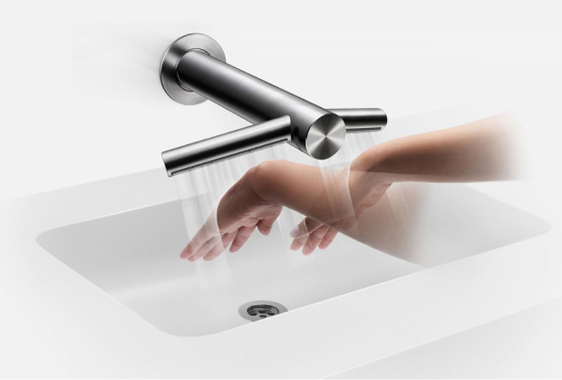
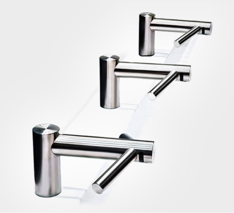
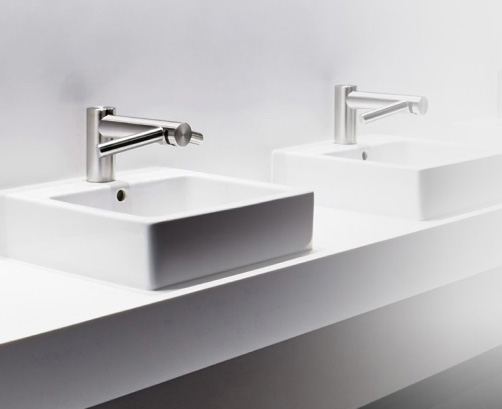
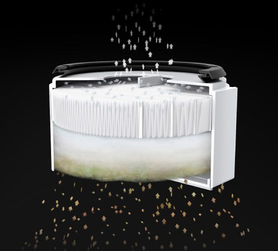
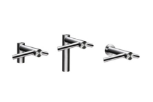
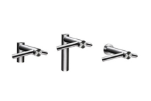

dyson airblade wash+dry
Мойте и высушивайте руки прямо над раковиной
Купить


Высушивает руки чистым воздухом
Сушилки для рук Dyson Airblade Wash+Dry оснащены фильтром класса HEPA H13, который улавливает 99,95% бактерий и вирусов1 из воздуха туалетной комнаты. Таким образом, руки высушиваются чистым воздухом.

Экономит пространство туалетной комнаты
Сушилка для рук Dyson Airblade Wash+Dry интегрирована в смеситель. Подача воды, воздуха осуществляется над раковиной из смесителя. Нет необходимости в организации отдельной зоны для высушивания рук.

Никакой воды на полу
С технологией AirbladeТМ, интергрированной в смеситель, ваши руки будут сухими через 14 секунд4. Нет необходимости переходить в отдельную зону, чтобы высушить руки. Вся вода останется в раковине.
Меньше очередей в туалетной комнате
Сушилка для рук Dyson Airblade Wash+Dry полностью высушивает руки за 14 секунд4. Благодаря этому сокращается время пребывания посетителей в туалетных комнатах.

Экономит ваши деньги
Готовые эксплуатационные расходы до 97% ниже, чем при использовании бумажных полотенец, и до 75% ниже, чем при использовании других сушилок для рук.2

Фильтры HEPA
Фильтр класса HEPA эффективен для удаления частиц пыли, взвешенных в воздухе. В соответствии с Европейскими стандартами, он улавливает из воздуха ванной комнаты 99,95% частиц размером 0,3 микрона.1

Двигатель Dyson с цифровым управлением
Двигатель Dyson V4 с цифровым управлением - один из самых компактных и полностью интегрированных двигателей с мощностью 1000 Вт. Он вращается со скоростью 81 000 оборота в минуту, и это единственный достаточно мощный двигатель для реализации технологии AirbladeТМ.

Технология AirbladeТМ, интегрированная в смеситель
Каждую секунду до 21 литров воздуха со скоростью 549 км/ч проходят сквозь отверстия шириной 0,55 миллиметра, высушивая руки быстро и гигиенично.
Этими преимуществами обладают только сушилки для рук Dyson Airblade™
Быстрые
Руки полностью высушены за 10-14 секунд462

Гигиеничные
Встроенный фильтр HEPA

Низкие эксплуатационные расходы
На 87% дешевле других сушилок для рук23

Более экологичные
Нет вырубки деревьев, нет бумажных отходов35

5 лет гарантии
Модельный ряд сушилок для рук Dyson Airblade™
 



- Фильтр HEPA протестирован независимой лабораторией в соответствии с условиями и положениями стандарта EN 1822-5.
- Воспользуйтесь калькулятором расчета стоимости эксплуатации.
- Расчеты выбросов углерода, основанные на использовании продукта в течение 5 лет, были получены с использованием программного обеспечения GaBi, предоставленного PE International, и метода, разработанного совместно с фондом Carbon Trust. Время высушивания измерялось с помощью метода испытания Dyson 769 на основе протокола P335 NSF с использованием измерения 0,1 г остаточной влажности.
- Время высушивания измерялось с помощью метода испытания Dyson 769 на основе протокола P335 NSF с использованием измерения 0,1 г остаточной влажности.
- Снижен уровень шума по сравнению с оригинальной моделью сушилки для рук Dyson Airblade V.
- Время высушивания и расход энергии рассчитаны для режима «Максимум» Время высушивания измерялось с помощью метода испытания Dyson 769 на основе протокола NSF P335, используя измерение до 0,1 г остаточной влажности.